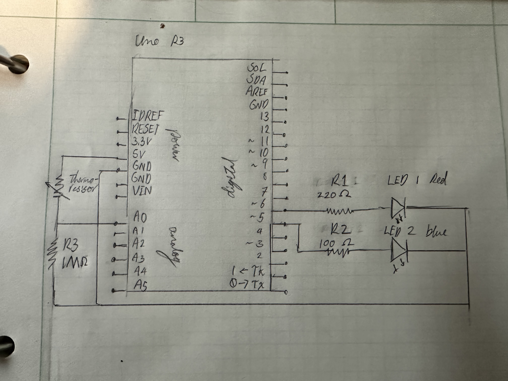
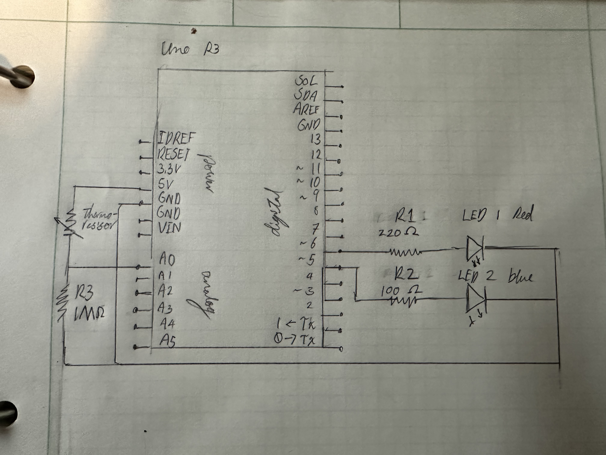
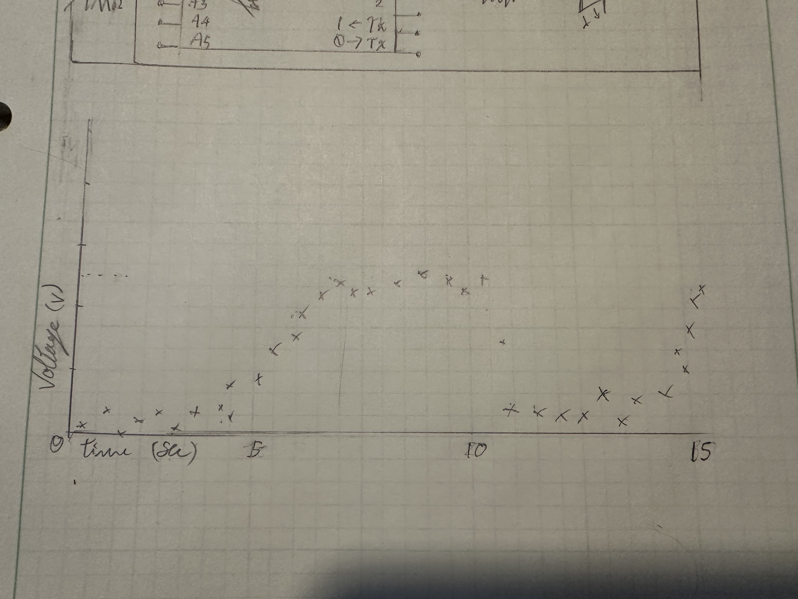

Skye's Assignment 3: Input Output!

 

The device after being calibrated has an blue LED that lights up when it reads a colder tempreture and a red LED that lights up when it reads a warmer tempreture.
The Blue LED has a higher voltage drop thus to have the same current in all LEDS the blue LED needs to be paired with a lower resistor of 100 compared to the 220. 1M resistor was used in the voltage divider to prevent short circuts and it was a high number to increase the range of values being detected by the A0 pin.
Code:
const int heatInPin = A0; // pin to read the voltage across the thermistor
const int hotOutPin = 6; // pin for the red light
const int coldOutPin = 5; // pin for the blue light
int sensorValue = 0; // this will be the variable that communicates what the sensor's response is
int sensorOut = 0; // this will be the varialble that communicated the LED input from the processed sensor value
int sensorMin = 1023; // The sensor is set to the highest value so it will update lower when lower measurments occur when calibrating
int sensorMax = 0; // The sensor is set to the lowest value so it will update higher when higher measurments occur calibrating
int sensorAverage = 0; // This is the value that determines the 0 point between what is considered warm or cold
void setup() { // start of the container of the pins I want to initialize and code to run before the loop
Serial.begin(9600); // allows for serial prints later on
pinMode(hotOutPin,OUTPUT); // initializes pin 6
pinMode(coldOutPin,OUTPUT); // initializes pin 5
while (millis()< 10000) { //for the first 10secs the following code will run to callibrate the voltage readings
if (sensorValue > sensorMax) { //tests if the value is greater than the current largest value/ the value saved as sensorMax
sensorMax = sensorValue; // if the last line is true the sensorValue's value becomes the new sensorMax value
}
if (sensorValue < sensorMin) { //tests if the value is smaller than the current smallest value/ the value saved as sensorMin
sensorMin = sensorValue; // if the last line is true the sensorValue's value becomes the new sensorMin value
}
}
sensorAverage = (sensorMax + sensorMin)/2; //calculates the middle point between sensor min and max values by taking the average
Serial.print("sensorMin ="); //prints the statment "sensorMin ="
Serial.print(sensorMin); //prints the value stored as sensorMin
Serial.print(", sensorMax ="); //prints the statment ", sensorMax ="
Serial.print(sensorMax); //prints the value stored as sensorMax
Serial.print(", sensorAve ="); //prints the statment ", sensorAve ="
Serial.println(sensorAverage); //prints the value stored as sensorAverage and ends the line
}
void loop() { // start of the container of the code I want to repeat
sensorValue = analogRead(heatInPin); //gets the votage value and set it to the sensorValue variable
sensorValue = constrain(sensorValue, sensorMin, sensorMax); //takes the sensorValue variable and makes it to be inbetween the sensorMax and sensorMin values
sensorOut = map(sensorValue, sensorMin, sensorMax, 0, 255); //takes the sensorValue and corrisponds it to a value between 0 and 255 for the LEDS and saves it to the sensorOut Value
if (sensorValue >= sensorAverage) { // tests if the sensorValue is or greater than sensorAverage
digitalWrite(coldOutPin, LOW); //turns off the Blue LED
Serial.print("The Sensor is warm, value ="); //prints "The Sensor is warm, value ="
Serial.println(sensorOut); //prints the sensor out value
if (sensorValue <= sensorAverage) { // tests if the sensorValue is or less than sensorAverage
digitalWrite(hotOutPin, LOW); //turns off the red LED
Serial.print("The Sensor is cold, value ="); //prints "The Sensor is cold, value ="
Serial.println(sensorOut); //prints the sensor out value
}
Console Output Examples
sensorMin =0, sensorMax =272, sensorAve =136The Sensor is cold, value =65
The Sensor is warm, value =220
Questions:
1: In your voltage divider, can the variable resistor be either R1 or R2 or does it need to be one or the other? Justify your answer with example calculations.
It can be either as the position of the resistance and voltage are additive in series. The voltage drop across the variable resistor would be the same in either position. The only difference would be the pin that we would be monitering the drop in voltage across the voltage divider would now be monitering the inverse voltage drop across the resistor, being inverted.
V out = V in *R2/(R1+R2)
Original position: Vout = 5*1,000,000,000/(R1 + 1,000,000,000)
Switched position: Vout = 5*R1/(1,000,000,000 + R1)
1 = R1/(1,000,000,000 + R1) + 1,000,000,000/(R1 + 1,000,000,000)
2: Draw a graph where the x-axis is time and the y-axis is voltage. Plot the voltage at V-measure of your voltage divider of your shared gif.

3: AnalogWrite and analogRead are respectively 8-bit and 10-bit values. Imagine you had 10-bit PWM and a 16-bit analog-to-digital converter instead. How would this change your map() code? Explain your answer.
The current values used to change the LED when writing to it is between 0 and 255 because of the limit of it being 8 bits, if it was 10 bits we could use the values between 0 to 1023. Right now our reading range is from 0 to 1023 but with 16 bits we could get readings from 0 to 65535. These wouldn't measure and give greater reading but insead allow readings to be more specific.
Our mapping code would instead be map(sensorValue, 0, 65535, 0, 1023) as opposed to the current ranges of map(sensorValue,0,1023,0,255)